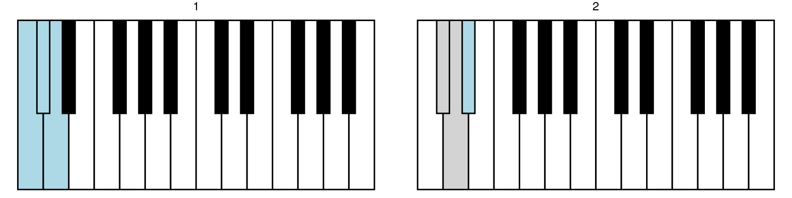
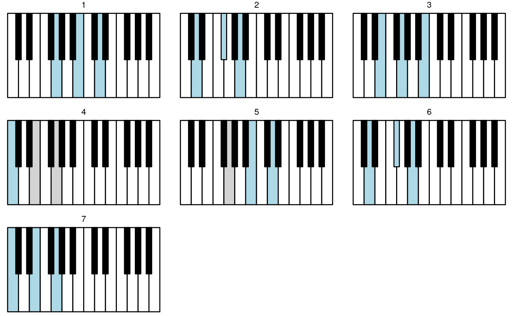
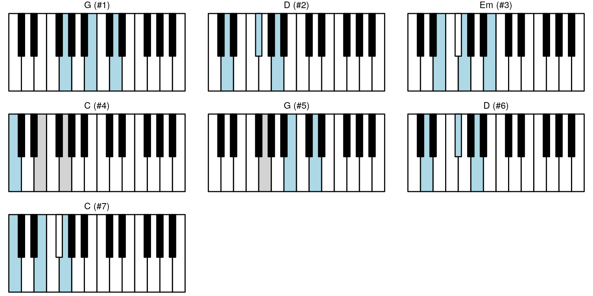

chord-sequence.Rmdkeys_coords %>%
highlight_key_sequence(key_sequence = list(c(1, 2, 3), c(2, 3, 4))) %>%
ggpiano(labels = FALSE) +
facet_wrap(~ seq_no)
“Let it be” by Beatles has initially chords G, D, Em, C, G, D, C.
choords <- list(construct_chord_major("G"),
construct_chord_major("D"),
construct_chord_minor("E"), # Em
construct_chord_major("C"),
construct_chord_major("G"),
construct_chord_major("D"),
construct_chord_major("C"))
choords
#> [[1]]
#> Major G chord with tones B, D
#>
#> [[2]]
#> Major D chord with tones F#/Gb, A
#>
#> [[3]]
#> Minor Em chord with tones G, B
#>
#> [[4]]
#> Major C chord with tones E, G
#>
#> [[5]]
#> Major G chord with tones B, D
#>
#> [[6]]
#> Major D chord with tones F#/Gb, A
#>
#> [[7]]
#> Major C chord with tones E, G
choord_names <- sapply(choords, capture.output)keys_seq <- lapply(choords, get_keys)
#keys_seq <- lapply(choords, get_keys_inversion, inversion = 0L)keys_coords %>%
highlight_key_sequence(key_sequence = keys_seq) %>%
ggpiano(labels = FALSE) +
facet_wrap(~ seq_no)
And get more helpful facet panel title:
d_chord_nms <- tibble::enframe(choord_names, name = "seq_no", value = "seq_nm")
d <- keys_coords %>%
highlight_key_sequence(key_sequence = keys_seq) %>%
left_join(d_chord_nms, by = "seq_no") %>%
mutate(seq_lbl = paste0(seq_no, "(", seq_nm, ")")) %>%
mutate(seq_lbl = forcats::fct_inorder(seq_lbl))